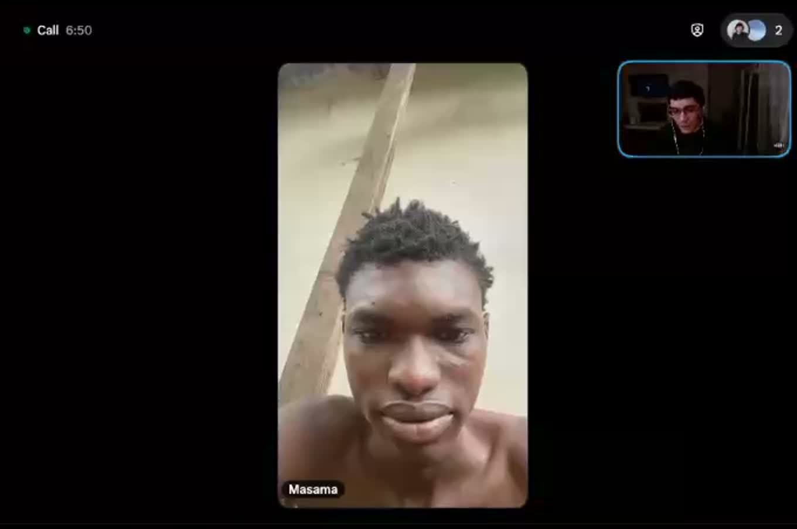

Currently supportingTHE GAMBIA · FAMILY SUPPORT
Food and rent for
Damsarr’s family.
I met Damsarr on X. After we spoke by video, I wanted to help him care for his four younger siblings.
Damsarr told me about the loss of his parents and his efforts to provide food, shelter, and education for his siblings. This fundraiser shares his account and the evidence he provides.
$500Initial fundraising goal
$100My support before launch